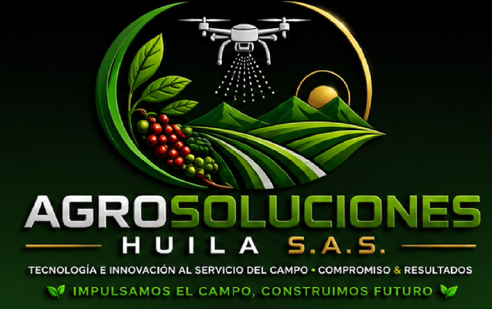
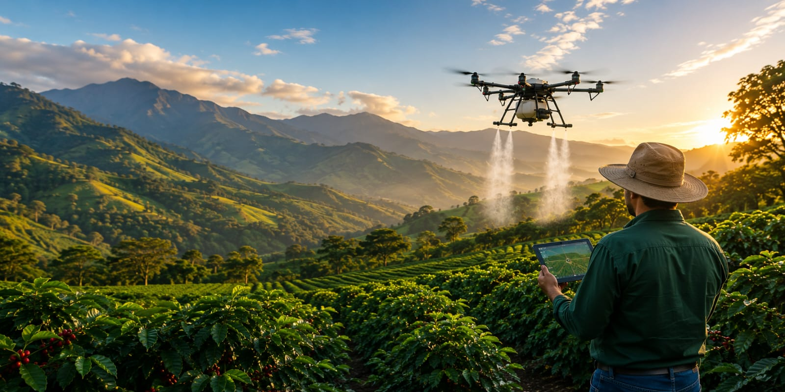

Tecnología e innovación al servicio del campo.

Asistencia técnica agrícola, fumigación con drones y asesoría empresarial.
Aplicaciones agrícolas de alta precisión, rápidas y eficientes.
Acompañamiento profesional para mejorar la productividad de tus cultivos.
Apoyo para fortalecer y hacer crecer tu empresa agropecuaria.
Elaboración de proyectos para convocatorias, financiación y desarrollo rural.
AgroSoluciones Huila S.A.S. es una empresa comprometida con el desarrollo del sector agropecuario. Brindamos servicios de fumigación con drones, asistencia técnica agrícola, asesoría empresarial y formulación de proyectos, ofreciendo soluciones innovadoras que aumentan la productividad, reducen costos y promueven un campo más competitivo y sostenible.
Contamos con personal preparado para brindar soluciones técnicas y prácticas al productor.
Utilizamos drones agrícolas para realizar aplicaciones más eficientes, seguras y uniformes.
Cada productor recibe recomendaciones adaptadas a las necesidades de su cultivo.
Trabajamos para aumentar la productividad de manera rentable y sostenible.